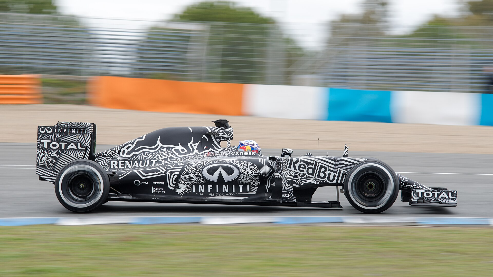
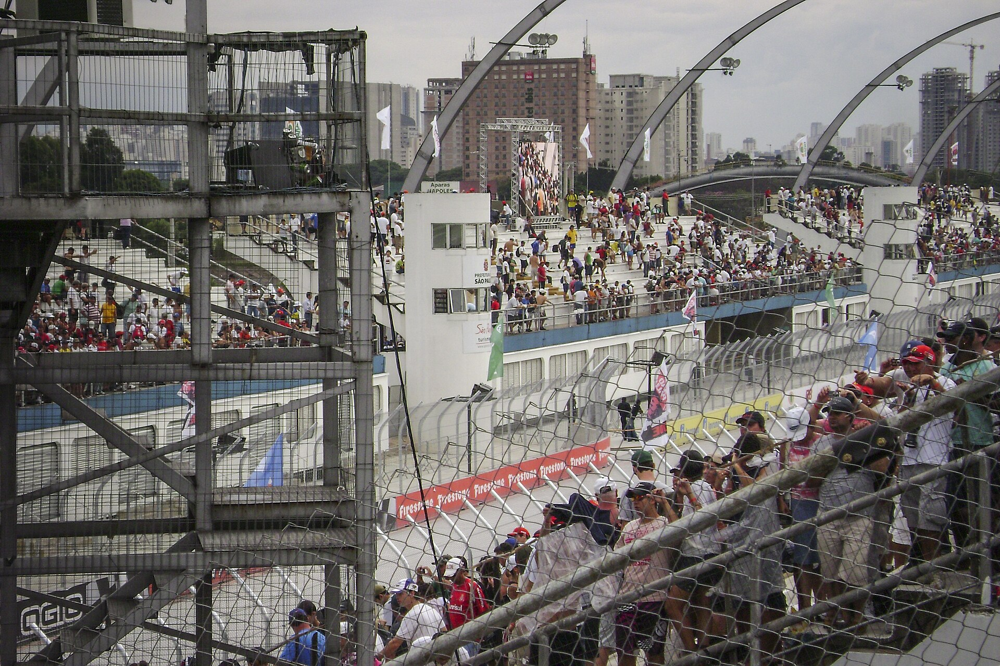
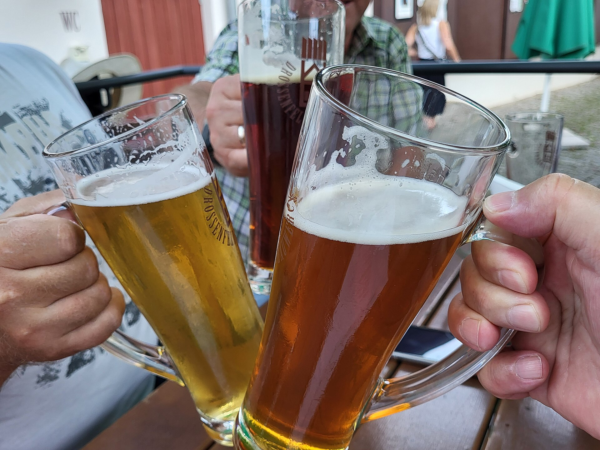
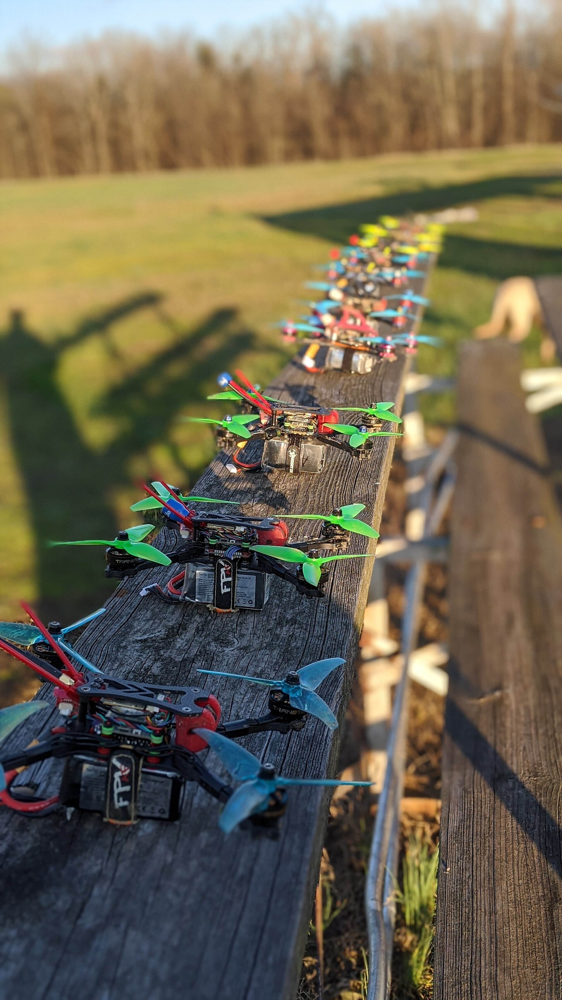
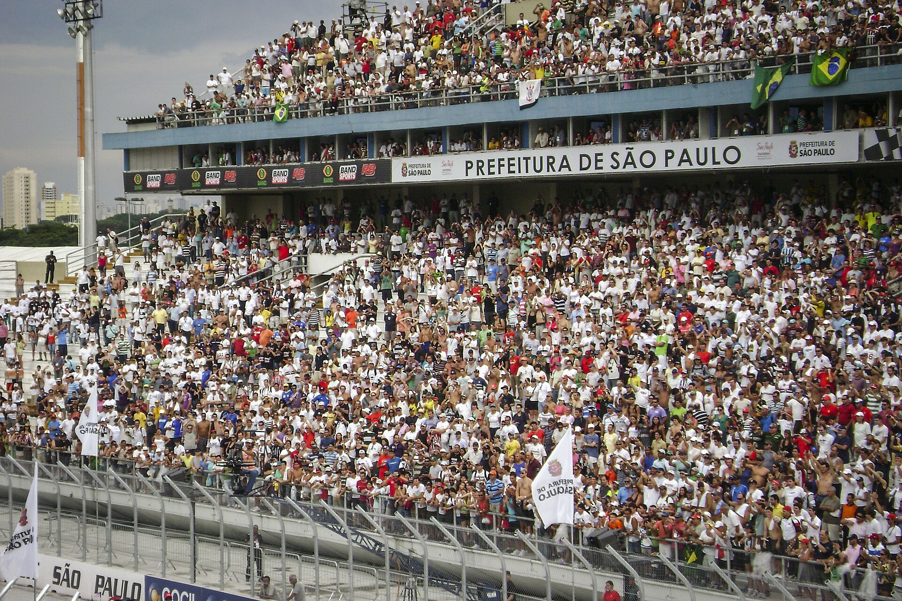

Na semana do GP, a corrida não coube no autódromo. As marcas espalharam ativações pela cidade e levaram a F1 a quem nem tinha ingresso.
A disputa deixou de ser só por pódio. Passou a ser por atenção.
Para celebrar a década, a marca montou o Heineken Village: telões para a corrida, lounges, DJs, degustação e brindes.
Não era só assistir ao GP. Era viver o GP com a marca na mão.

A velocidade entrou no ponto de venda. Quem passava parava para pilotar, olhava o placar e voltava para tentar de novo.


Quando o evento sai da pista, o fã vira consumidor.